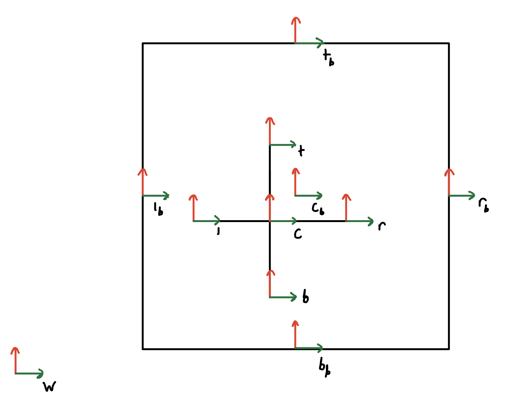

Physics Engine
From Scratch
Implemented Lagrangian dynamics in a Python physics simulator of a 6 DOF system.
Code inputs initial conditions and external forces and produces an animation.

Overview
The goal of this project was to demonstrate understanding of Lagrangian dynamics. Lagrangian dynamics is often overlooked in undergraduate dynamics courses, but it is the most fundamental way to model complex systems. In modern engineering, napkin dynamics calculations have been replaced by state-of-the-art simulations. Understanding how these simulations work enables an engineer to quantify the accuracy of a simulation.
System Configuration
Lagrangian dynamics relies on configuration variables. This jack in a box system has 6 degrees of freedom meaning there are 6 configuration variables, 3 for the box and 3 for the jack. Each object can be fully defined with a x and y coordinate for position and an angle (θ) for orientation.
Geometry
It is important to stay organized when modeling a complex system.
Using trigonometry for geometry calculations can be tedious and prone to error.
I defined the system's geometry by placing reference frames at the ends of the jack and walls of the box.
Using transformation matricies, I am able to track the position and orientation of all frames.
This is critical for impact detection.

Figure 1. Reference frames for the jack/box system. X axes are in green and y axes are in red.
Euler-Lagrange (EL) Equations
To calculate the EL equations, I started with potential and kinetic energy.
For kinetic energy, I used the equation,
$$KE = \frac{1}{2}{V_b}^{T}IV_b.$$
\(V_b\) is the body velocity
I is the combined mass and inertia matrix
I set to potential energy to 0 under the assumption that gravity is acting in the z direction (into the screen).
I calculated the Lagrangian by subtracting the potential energy from the kinetic energy, \(L=KE-PE\).
Finally, I formed the EL equations by differentiating the Lagrangian.
$$\frac{d}{dt}(\frac{δL}{δ\frac{dq}{dt}})-\frac{δL}{δq}=F$$
q is a matrix of configuration variables
F is a matrix of external forces on the system
L is the Lagrangian
Constraints
There are 16 constraints because each side of the jack can hit any of the four walls of the box. I formed the constraint equations by calculating the position of tips of the jack in the frames of the box walls. Then, I set the x or y coordinate of the transformation matrix equal to 0 representing collision between the jack and the box. For the transformations between the jack and the left and right walls of the box, I set the x coordinate equal to zero. For the transformations between the jack and the top and bottom walls of the box, I set the y coordinate equal to zero.
Impacts Update Laws
To calculate the impact update, I had to solve for the time derivative of the configuration variables after impact.
The configuration variables before and after impact are equivalent.
I made two substitutions dictionaries to do this (one with configuration variables before impact and one with configuration variables after impact).
I used the substitution dictionaries in the impact update equations.
Momentum Update:
$${\frac{δL}{δ\frac{dq}{dt}}}^{+}-{\frac{δL}{δ\frac{dq}{dt}}}^{-}=λ\frac{δφ}{δq}$$
φ is the impact constraint
- represents configuration variables before impact
+ represents configuration variables after impact
Energy Update:
$$H^{+}-H^{-}=0$$
$$H=(\frac{δL}{δ\frac{dq}{dt}})(\frac{dq}{dt})-L$$
H is the Hamiltonain
Each constraint requires a different set of impact update equations. Because there are too many variables to solve these equations symbolically in python, I solved the equations when an impact is detected during simulation. When an impact is detected, I substitute current values of the configuration variables and their time derivative into my impact update equations reducing the computational intensity of solving the equations. During each step of the simulation, I check to see if any of the impact constraints have been met. If the code detects impact, the impact equations are solved. If the code detects no impact, the EL equations are solved.
Results
External Forces & Initial Conditions
$$\begin{bmatrix} F_{jack,\ x} \\ F_{jack,\ y} \\ Τ_{jack} \\ F_{box,\ x} \\ F_{box,\ y} \\ Τ_{box} \end{bmatrix} = \begin{bmatrix} 0 \\ 0 \\ 0 \\ 0 \\ 0 \\ 0 \end{bmatrix}
\hspace{10mm} \begin{bmatrix} \dot{x}_{jack} \\ \dot{y}_{jack} \\ ω_{jack} \\ \dot{x}_{box} \\ \dot{y}_{box} \\ ω_{box} \end{bmatrix} = \begin{bmatrix} 5 \\ 0 \\ 0 \\ 0 \\ 0 \\ 1 \end{bmatrix}$$

External Forces & Initial Conditions
$$\begin{bmatrix} F_{jack,\ x} \\ F_{jack,\ y} \\ Τ_{jack} \\ F_{box,\ x} \\ F_{box,\ y} \\ Τ_{box} \end{bmatrix} = \begin{bmatrix} 0 \\ 0 \\ 0 \\ 300sin(t) \\ 300cos(t) \\ 0 \end{bmatrix}
\hspace{10mm} \begin{bmatrix} \dot{x}_{jack} \\ \dot{y}_{jack} \\ ω_{jack} \\ \dot{x}_{box} \\ \dot{y}_{box} \\ ω_{box} \end{bmatrix} = \begin{bmatrix} 0 \\ 0 \\ 0 \\ 0 \\ 0 \\ 1 \end{bmatrix}$$

External Forces & Initial Conditions
$$\begin{bmatrix} F_{jack,\ x} \\ F_{jack,\ y} \\ Τ_{jack} \\ F_{box,\ x} \\ F_{box,\ y} \\ Τ_{box} \end{bmatrix} = \begin{bmatrix} 0 \\ 0 \\ 0 \\ 0 \\ 0 \\ 0 \end{bmatrix}
\hspace{10mm} \begin{bmatrix} \dot{x}_{jack} \\ \dot{y}_{jack} \\ ω_{jack} \\ \dot{x}_{box} \\ \dot{y}_{box} \\ ω_{box} \end{bmatrix} = \begin{bmatrix} -5 \\ 0 \\ 0 \\ 2 \\ 0.5 \\ 3 \end{bmatrix}$$
External Forces & Initial Conditions
$$\begin{bmatrix} F_{jack,\ x} \\ F_{jack,\ y} \\ Τ_{jack} \\ F_{box,\ x} \\ F_{box,\ y} \\ Τ_{box} \end{bmatrix} = \begin{bmatrix} 40\sqrt[t+0.1]{t} \\ 40\sqrt[t+0.1]{t} \\ 30sin(t) \\ 0 \\ 0 \\ 0 \end{bmatrix}
\hspace{10mm} \begin{bmatrix} \dot{x}_{jack} \\ \dot{y}_{jack} \\ ω_{jack} \\ \dot{x}_{box} \\ \dot{y}_{box} \\ ω_{box} \end{bmatrix} = \begin{bmatrix} 0 \\ 0 \\ 0 \\ 0 \\ 0 \\ 0 \end{bmatrix}$$
External Forces & Initial Conditions
$$\begin{bmatrix} F_{jack,\ x} \\ F_{jack,\ y} \\ Τ_{jack} \\ F_{box,\ x} \\ F_{box,\ y} \\ Τ_{box} \end{bmatrix} = \begin{bmatrix} 40\sqrt[t+0.1]{t} \\ 40\sqrt[t+0.1]{t} \\ 30sin(t) \\ 300sin(t) \\ 300cos(t) \\ 0 \end{bmatrix}
\hspace{10mm} \begin{bmatrix} \dot{x}_{jack} \\ \dot{y}_{jack} \\ ω_{jack} \\ \dot{x}_{box} \\ \dot{y}_{box} \\ ω_{box} \end{bmatrix} = \begin{bmatrix} -1 \\ -5 \\ 0 \\ 0 \\ 0 \\ -1 \end{bmatrix}$$
External Forces & Initial Conditions
$$\begin{bmatrix} F_{jack,\ x} \\ F_{jack,\ y} \\ Τ_{jack} \\ F_{box,\ x} \\ F_{box,\ y} \\ Τ_{box} \end{bmatrix} = \begin{bmatrix} 40\sqrt[t+0.1]{t} \\ 40\sqrt[t+0.1]{t} \\ 30sin(t) \\ 300sin(t) \\ 300cos(t) \\ \frac{3}{t+0.1} \end{bmatrix}
\hspace{10mm} \begin{bmatrix} \dot{x}_{jack} \\ \dot{y}_{jack} \\ ω_{jack} \\ \dot{x}_{box} \\ \dot{y}_{box} \\ ω_{box} \end{bmatrix} = \begin{bmatrix} -1 \\ -5 \\ 1 \\ -0.5 \\ 0.5 \\ -1 \end{bmatrix}$$
Notes On Results:
The jack tips are 1kg and 1m.
The box walls are 25kg and 10m.
Force [N]
Torque [Nm]
Time [s]
Angles [rad]
Distance [m]
Mass [kg]